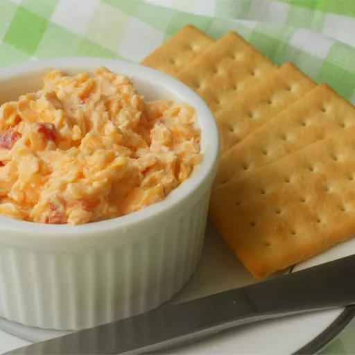
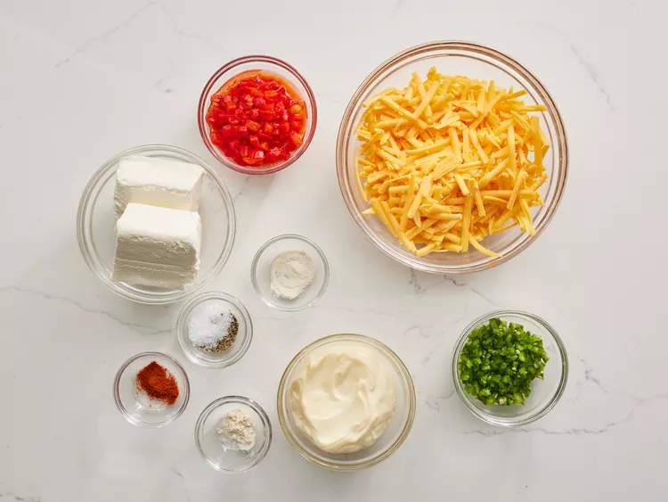

HOME

Wonderful pimento cheese with jalapeño can be used to spice up grilled cheese sandwiches, as a spread for crackers, or served alongside your favorite fried green tomatoes.
Ingredients
2 cups shredded extra-sharp Cheddar cheese
8 ounces cream cheese, softened
½ cup mayonnaise
1 (4 ounce) jar diced pimento, drained
1 jalapeño pepper, seeded and minced (Optional)
Directions
Directions
- Step 1

Gather all ingredients.
- Step 2
Place Cheddar cheese, cream cheese, mayonnaise, pimento, minced jalapeño, garlic powder, cayenne pepper, and onion powder in a large bowl.
- Step 3
Mix until thoroughly combined.